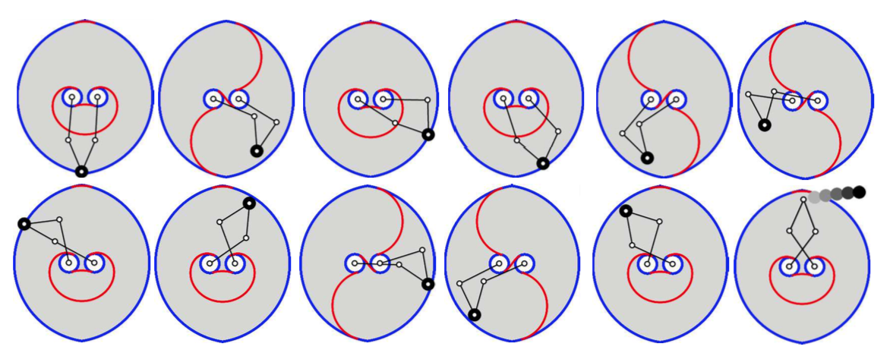
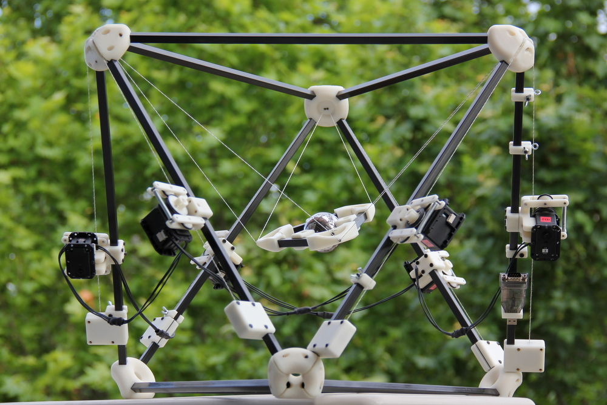
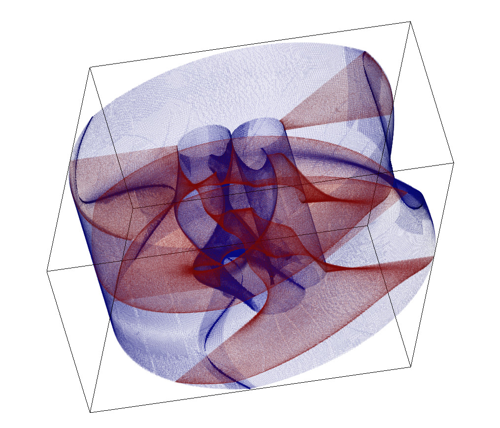
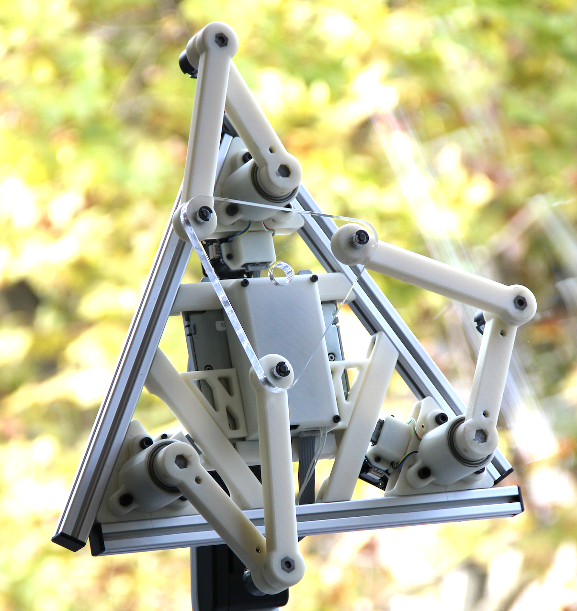
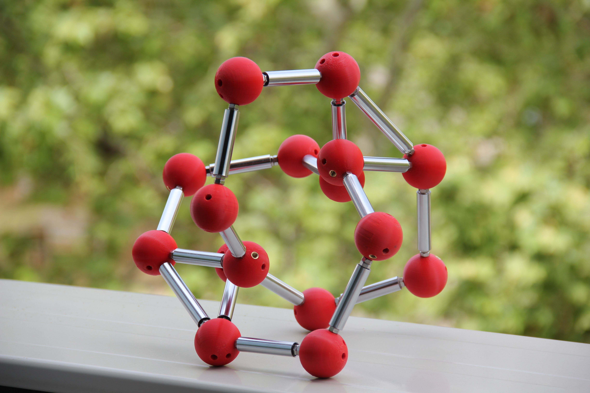
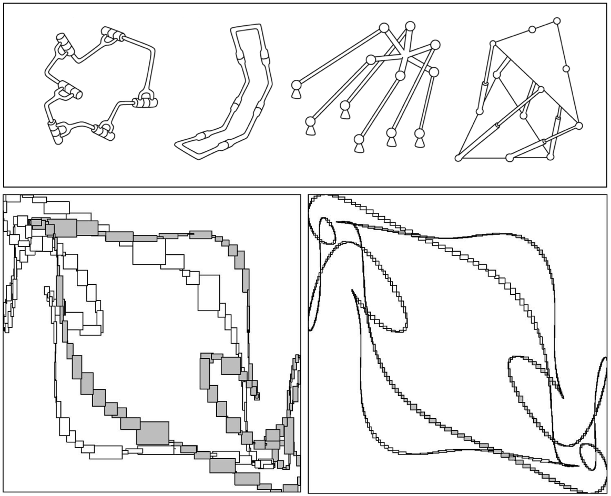
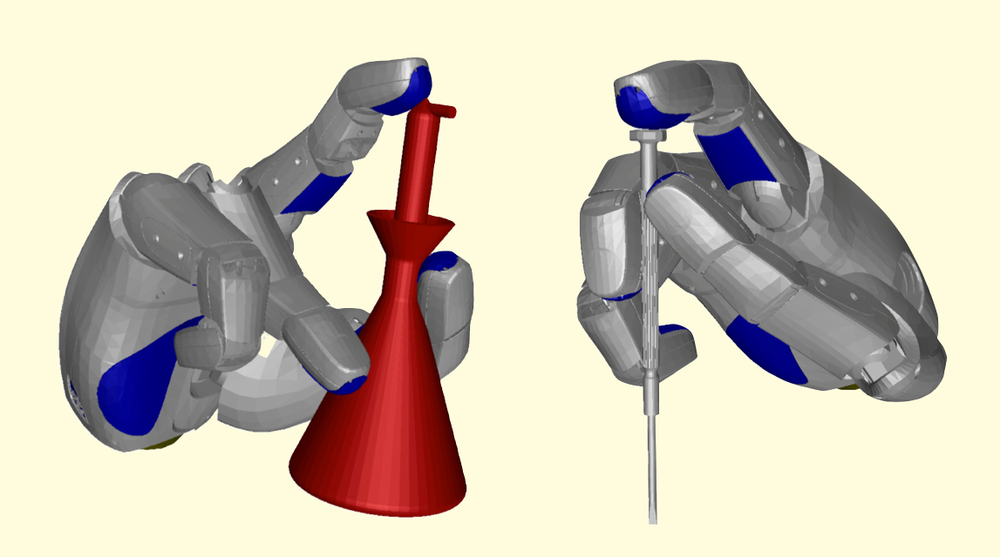
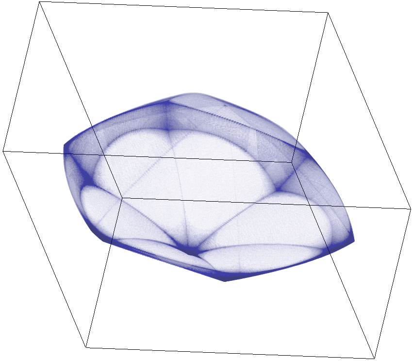
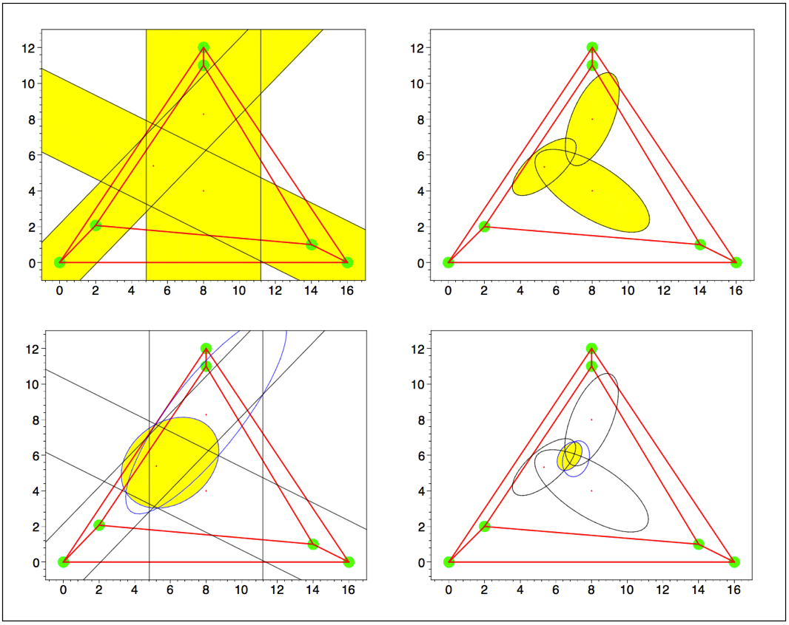
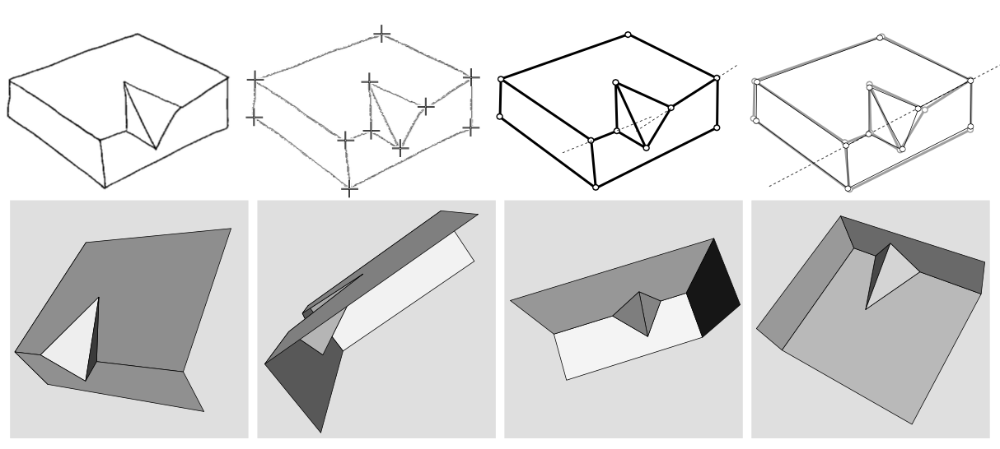

Research interests
My area of interest is robot kinematics, dynamics, and control. Recently, we are developing new tools for kinodynamic trajectory planning, optimization, and control of constrained multibody systems. Over the years, I've been also designing algorithms for computing singularities and workspaces, and for planning collision and singularity-free paths between given configurations. Most of such algorithms are implemented in the CUIK Suite. During my Ph.D. and postdoc periods I worked on scene reconstruction and uncertainty manipulation. The links below provide more information about these topics.
Kinodynamic motion planning and control - cable-driven robots - singularity analysis - singularity-free path planning - workspace determination - grasp synthesis - position analysis - molecular motions - uncertainty manipulation - scene reconstruction
Kinodynamic motion planning and control of closed-chain systems

We are working on kinodynamic planning and control with dynamic constraints. By these constraints we mean the equations of motion of the robot (differential algebraic equations) and existing limits in the actuation and constraint forces (inequality constraints). If necessary, we can also deal with singularity-avoidance constraints. For example, the figure above shows the results of planning a weight-throwing task on a 5-bar parallel robot. Note how the robot swings back and forth to gain momentum while avoiding the red locus of singularities until it finally throws the load (the locus changes when one of the arm shifts from elbow up to elbow down, or viceversa). In parallel, we are developing LQR controllers to stabilize the planned trajectories. Interestingly, we have shown that one can control a parallel robot across (or even at) a forward singularity. Each planning strategy (either avoiding or allowing the traversal of forward singularities) has its advantages and shortcomings.
Cable-driven robots

Motion paths of cable-driven hexapods must carefully be planned to ensure that the lengths and tensions of all cables remain within acceptable limits, for a given wrench applied to the platform. The cables cannot go slack (to keep the control of the robot) nor excessively tight (to prevent cable breakage) even in the presence of bounded perturbations of the wrench. Our work has been on developing a path planner that respects such tension constraints, and at the same time avoids eventual obstacles in the workspace. The planner can be used to navigate the full 6D C-space or smaller subspaces defined by contact or geometric constraints. More information can be found in our 2016 paper in the IEEE TRO. We have also given a variant of the technique for aerial-towed cable systems (aka the "FLYCRANE").
Singularity analysis

Singularity analysis is a central topic of robot kinematics. It has as a goal the study of certain configurations, termed singular or critical, where important changes take place in the kinetostatic performance of a mechanism. Rigidity or dexterity losses arise, and there may appear unresolvable or uncontrollable end-effector forces, among other effects. Obtaining complete maps of the singularity locus is thus essential for a proper robot design. We have developed an extensive theory and algorithms for computing all singularity loci of a mechanism. A distinctive feature of the methods is that they are applicable to non-redundant mechanisms of general architecture. See our papers in the 2008-2015 period (a good start is MMT 2013). Our 2016 book presents all such results in a consistent manner.
Singularity-free path planning

Here we have shown how it is possible to send forward or inverse singularities to infinity, obtaining an algebraic formulation of the singularity-free C-space of a mechanism. C-space singularities are sent to infinity too, which results in a nicely smooth configuration space. This allows us to define a conceptually simple higher-dimensional continuation strategy to find paths between given configurations. Since the C-space is smooth, it can be navigated without fear of finding bifurcations. This results in an automated method for computing singularity-free paths in general non-redundant mechanisms. These results can be found in our 2013 IEEE TRO paper and in our 2016 book. The approach has also been validated empirically on the 3-RRR robot of the picture above.
Molecular motions

We also have shown how our algorithms can be applied to explore the conformational space of biomolecules. We here advocate for the power of the so-called rigid-geometry hypothesis, which allows us to model a molecule's C-space with a reduced number of configuration coordinates, subject to a system of kinematic or geometric constraints. We solve such systems through branch-and-prune or numerical continuation methods. In colaboration with Adnan Sljoka, Bernd Schulze, and Walter Whiteley, we have also explored the C-space of symmetric molecular linkages.
Position analysis

This was our main focus in the period 2005-2010. Our goal was to find a general solution to the position analysis of multiloop linkages. I.e., for computing all possible configurations that a linkage can adopt, while respecting the kinematic constraints imposed by its joints. The problem finds applications to robotics (direct and inverse kinematics of serial/parallel robots, cooperative manipulation, and closed-chain motion planning), structural biology (conformational analysis of biomolecules), multibody dynamics (initial position and finite displacement problems), and computer-aided design (variational CAD and assembly positioning). Main papers are ASME 2007 and TRO 2009, or, through an alternative approach, MMT2012.
Grasp synthesis

Several aspects have to be addressed before realizing the dream of a robotic hand-arm system with human-like capabilities, ranging from the consolidation of a proper mechatronic design, to the development of precise, lightweight sensors and actuators, to the efficient planning and control of the articular forces and motions required for interaction with the environment. We have developed algorithms for a main problem within the latter aspect, known as the grasp planning problem: Given a robotic system formed by a multifingered hand attached to an arm, and an object to be grasped, both with a known geometry and location in 3-space, determine how the hand-arm system should be moved without colliding with itself or with the environment, in order to firmly grasp the object in a suitable way (defined by task-dependent hand-object contact constraints). See IJRR 2011, TRO 2013 and the PhD Thesis by Carlos Rosales.
Workspace determination

We have developed a new method for workspace boundary determination on general structure manipulators. The method uses our branch-and-prune technique to isolate a set of output singularities. Then, following Haug et al., we classify the points in this set according to the motion impediment they give rise to. A detailed map of the workspace is obtained as a result, where all interior and exterior regions, together with the singularity or barrier sets that separate them, get clearly identified. The method can deal with open- or closed-chain robots, whether planar or spatial, and is able to take joint limits into account. Advantages over previous methods based on continuation include the ability to converge to all boundary points, and the fact that a priori knowledge of the workspace is not required. See TRO 2012, ASME 2013, and Chapter 4 of this book.
Uncertainty manipulation

In the real world, the need to cope with uncertainty arises at all levels of a robot task, during sensory perception, object representation, or task execution. In collaboration with other members of the KRD group, we have developed methods for handling such uncertainty, including general-purpose tools like the Ellipsoidal Calculus Toolbox, or specific methods for error estimation in trilateration and pose estimation devices.
Scene reconstruction from line drawings

During my PhD I worked in machine interpretation of line drawings. This is also known as the "shape-from-image" problem, where "image" means a "hand-made sketch" essentially. The goal was to fully automate the process of converting one such sketch to the most-plausible three-dimensional model it represents. The work studies the polyhedral case, its connections with rigidity theory, and provides solutions to implementation problems like image "superstrictness". Main publications are Ros and Thomas 2002, Ros et al. 2003, Ros and Thomas 2005 and my own PhD thesis.